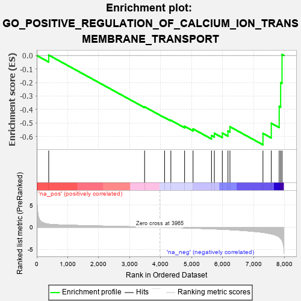
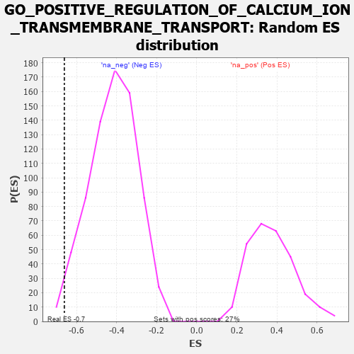

| | | Dataset | 7d |
| Phenotype | NoPhenotypeAvailable |
| Upregulated in class | na_neg |
| GeneSet | GO_POSITIVE_REGULATION_OF_CALCIUM_ION_TRANSMEMBRANE_TRANSPORT |
| Enrichment Score (ES) | -0.6611121 |
| Normalized Enrichment Score (NES) | -1.5827516 |
| Nominal p-value | 0.0137551585 |
| FDR q-value | 0.10866177 |
| FWER p-Value | 1.0 |
Table: GSEA Results Summary

Fig 1: Enrichment plot: GO_POSITIVE_REGULATION_OF_CALCIUM_ION_TRANSMEMBRANE_TRANSPORT
Profile of the Running ES Score & Positions of GeneSet Members on the Rank Ordered List
| PROBE | GENE SYMBOL | GENE_TITLE | RANK IN GENE LIST | RANK METRIC SCORE | RUNNING ES | CORE ENRICHMENT | | 1 | BAX | | | 387 | 0.711 | 0.0027 | No |
| 2 | CDK5 | | | 3480 | 0.080 | -0.3801 | No |
| 3 | ABL1 | | | 4125 | -0.027 | -0.4591 | No |
| 4 | STAC | | | 4327 | -0.064 | -0.4797 | No |
| 5 | PLCG1 | | | 4770 | -0.151 | -0.5244 | No |
| 6 | PDPK1 | | | 5043 | -0.207 | -0.5436 | No |
| 7 | G6PD | | | 5638 | -0.358 | -0.5924 | Yes |
| 8 | CALCR | | | 5730 | -0.386 | -0.5760 | Yes |
| 9 | STAC2 | | | 5987 | -0.466 | -0.5745 | Yes |
| 10 | STIM1 | | | 6169 | -0.528 | -0.5590 | Yes |
| 11 | RGN | | | 6233 | -0.547 | -0.5274 | Yes |
| 12 | ANK2 | | | 7298 | -1.170 | -0.5765 | Yes |
| 13 | CALM1 | | | 7567 | -1.499 | -0.5018 | Yes |
| 14 | PKD2 | | | 7822 | -2.167 | -0.3771 | Yes |
| 15 | CALM3 | | | 7869 | -2.525 | -0.2003 | Yes |
| 16 | NPSR1 | | | 7913 | -2.947 | 0.0073 | Yes |
Table: GSEA details [plain text format]

Fig 2: GO_POSITIVE_REGULATION_OF_CALCIUM_ION_TRANSMEMBRANE_TRANSPORT: Random ES distribution
Gene set null distribution of ES for GO_POSITIVE_REGULATION_OF_CALCIUM_ION_TRANSMEMBRANE_TRANSPORT